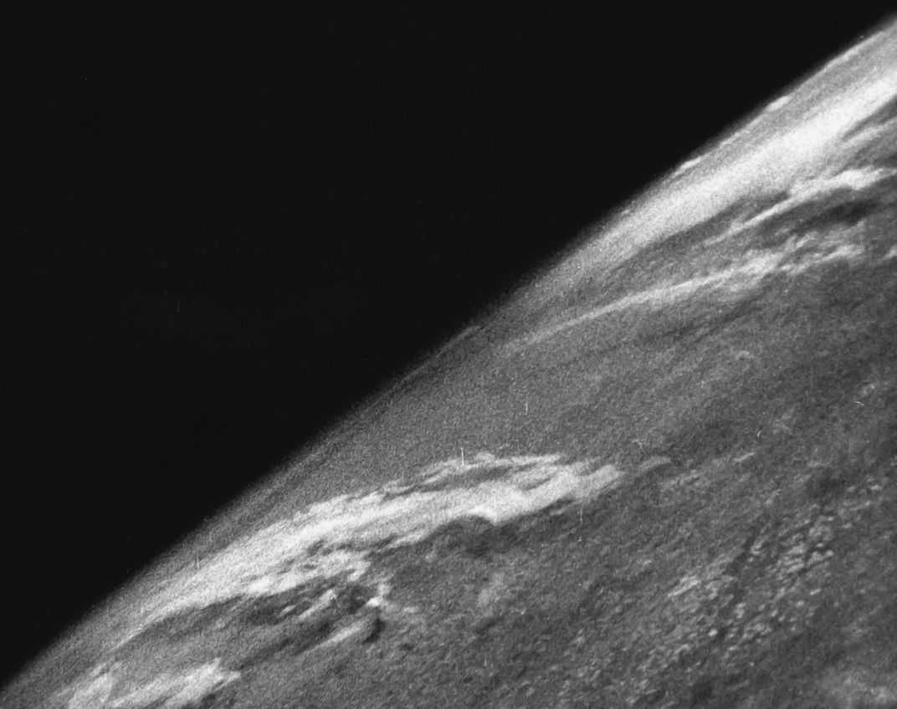

I make 3D art in blender, sometimes program in C#, and make websites
Links: CG portfolio | Contact | Bored? | TI83+ Programs
Space Links: Grey on Black | Scale | Quantum Physics | Eldritch Horror
About me:
I think I can say I'm a college student now. I'm accepted into CCP so I guess I will be soon or now idk but I'm just gonna say I am a college student. I'm starting next year. :D
I haven't really been focused on one particular thing, but here's what I usually do when I'm bored:
But what else am I interested in that isn't something that can just be written off as a hobby?
is big. It is very remarkably hugely big. How did it get here?
Well we don't know but here's some ideas
All of these theories are plausible, but they have shortfalls:
So, humanity decided they were going to find out once and for all how this space thing really worked.
but how?
R O C K E T S
So, basically Isaac newton says hey, you can make shit move if you have it shoot shit out of it.
And a couple hundred years later, Robert Goddard is like holy shit we can do that. And he works out liquid fuel and propulsion.
Then Hitler comes along and takes it, forcing some Jewish slaves to construct the first ever rocket capable of entering space, built with the sole purpose of destroying London.
And then some big air force military guys a bit later down the road take that and strap a camera to it:
And then NASA makes a cool plane that goes real fast and high
But this Sergei Korolev guy is like ooh nice and looks at the V2. He then gives a modified version to Russia and goes to jail for apparently being an asshole
And NASA just kinda finds Wernher Von Braun and kinda has him all the sudden
And Sergei Korolev figures out how he can put a dog in space
And then a dog goes to space.
And then one of our heros, Yuri Gagarin, becomes the first man in space, orbiting the Earth, and then getting back. He then went on to do something remarkable,
and swiftly became the first man that went to space who got to die in a jet crash shortly thereafter
A couple boring competition things happened like the Redstone rocket, John Glenn, Alan Shepard, some spy shit, and a couple other things
Then the Gemini Program happened and the United States learned how to play bumper cars in space
Then The Apollo Program started and the United States really bumped up the bumper cars game, even getting really close to the Moon
And all the sudden Neil Armstrong, our second hero, ended up there, on the surface of the Moon.
They went to the Moon a couple more times but that all died off.
There was then Buran and the Space Shuttle and the experimental engines and the really cool, but boring things
And then private corporations like spaceX were like nah fuck this we gotta go to Mars and hell yeah yeehaw here we are riding broomsticks to the ISS and snorting stardust and powdered oxygen